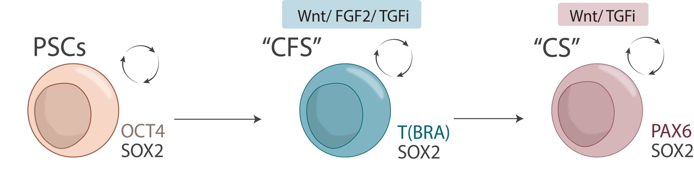
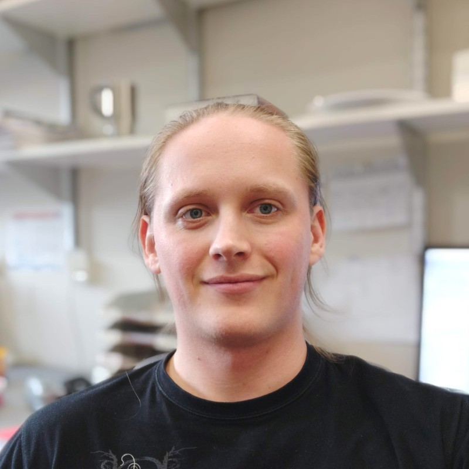
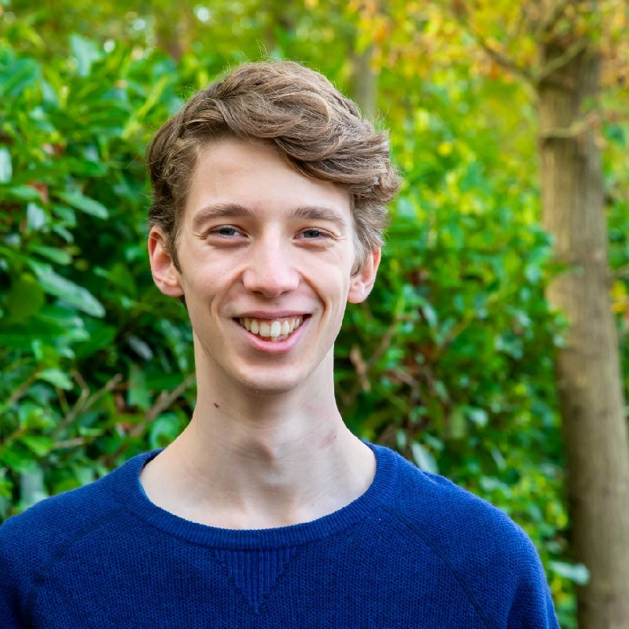
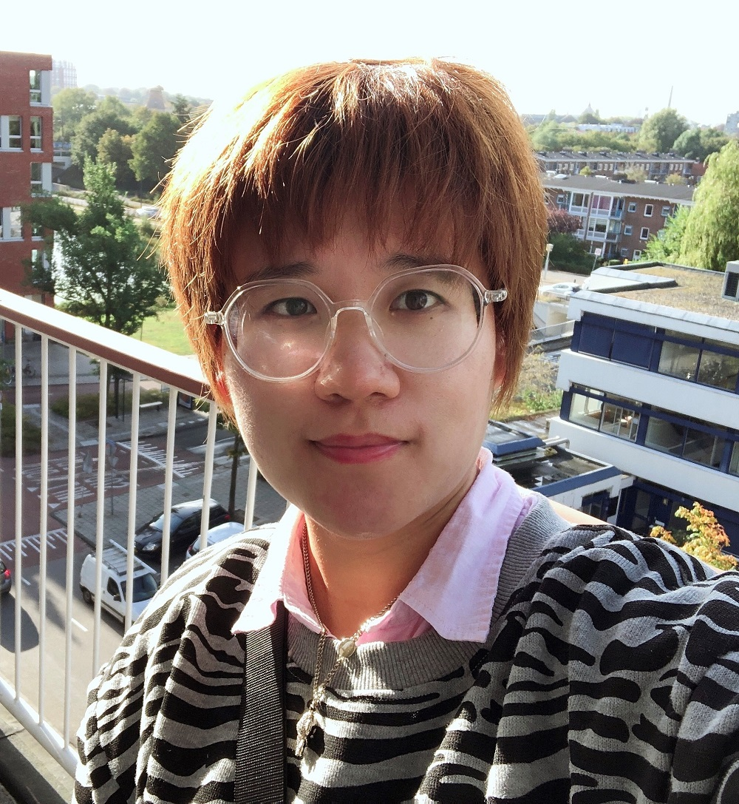

About the Project
Neuromesodermal progenitors (NMPs) are a transient pool of multipotent stem cells which exist only in the early embryo. From this self-renewing pool of cells much of the caudal tissue is created during development, including the caudal spinal cord, bone tissue, and skeletal muscle. Our group has developed an in vitro model which captures these NMPs in a meta-stable state. This model, which we term ‘Axial Stem Cells’ (AxSCs) is exceptional in its ability to generate stable NMP-like cells, which maintain their distinct cell identity and self-renewing potential indefinitely.

AxSCs allow for the in-depth study of spinal development, the development of the peripheral nervous system, as well as its interplay with for example skeletal muscle. These are important structures which are frequently attacked by degenerative diseases such as ALS. AxSCs facilitate disease modelling and drug screening as they are capable of closely mimicking these structures in a highly efficient manner, providing electrophysiologically active neurons in less than 2 weeks, greatly improving previous protocols.
This project builds upon the discovery of AxSCs and their in-depth characterization (D. Kelle, et al. 2024. Capture of Human Neuromesodermal and Posterior Neural Tube Axial Stem Cells. BioRxiv.). Key points include:
- Creating more distinct AxSC-derived spinal cord progenitors, particularly for motor- and sensory neurons of the peripheral nervous system.
- Generation of self-organizing caudal neural tube organoids, modelling secondary neurulation.
- Creating AxSCs from various species (in conjunction with work from the John Templeton Foundation) from which our lab has already banked a variety of stem cells and somatic cells, for the investigation of interspecies differences in development and longevity. Such comparisons will allow a better understanding of human development.
The work on axial stem cells, primarily performed by Ruben de Vries, Yuting Wang and Benjamin Tak, is funded through the Lingling Wiyadharma Fund. Founded by Leiden University alumnus Hans van der Valk, he generously supports various research projects in the natural sciences in loving memory of his wife, Lingling Wiyadharma.
Team Members

Benjamin Tak
PhD Candidate

Ruben de Vries
PhD Candidate

Yuting Wang
PhD Candidate
Updates

Pre-print by D. Kelle available on BioRxiv: Capture of Human Neuromesodermal and Posterior Neural Tube Axial Stem Cells.
March 29, 2024
Available at doi: https://doi.org/10.1101/2024.03.26.586760

Committed stem-cell-research donor sets up third named funds
July 6, 2023
Behind each named fund is a special story, but it is not often that, having already set up two very personal funds, a donor chooses to make a third contribution to Leiden’s research. In the Faculty Club Dining Room, donor and alumnus Hans van der Valk signed the agreement establishing the ‘Lingling Wiyadharma Fund for the Practice of the Natural Sciences’. Full text here.